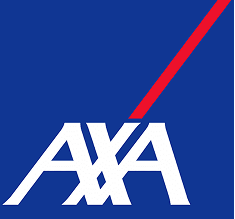
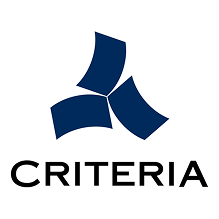
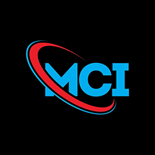
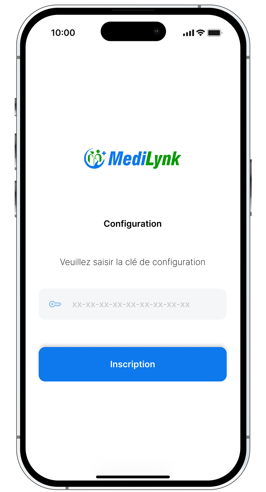
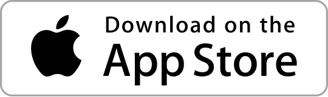

Gestion de Santé simplifiée
Votre assurance santé, enfin simple à gérer
MediLynk , La solution digitale pour suivre et gérer votre assurance santé, votre mutuelle et vos services en toute simplicité.
CommencerMediLynk , La solution digitale pour suivre et gérer votre assurance santé, votre mutuelle et vos services en toute simplicité.
CommencerNous accompagne déjà plusieurs acteurs du secteur santé.



Nous accompagne déjà plusieurs acteurs du secteur santé.
Fini les dossiers perdus, les informations éparpillées et les démarches compliquées. MediLynk centralise toutes vos données santé et mutuelles sur votre mobile.
Suivre vos assurances et mutuelles n’a jamais été aussi simple. MediLynk vous aide à gérer vos services santé facilement et en toute sécurité.
Plus besoin de paperasse ou d’applications multiples : MediLynk regroupe tout en un seul endroit.
Gérez, suivez et contrôlez vos informations santé facilement depuis votre mobile.
Gérez et consultez facilement toutes vos informations d’assurance depuis une seule application. Accédez aux détails de vos contrats, suivez votre couverture et gardez vos informations à jour sans démarches compliquées.
Suivez vos mutuelles et vos prestations en temps réel. Consultez vos garanties, vérifiez vos prises en charge et gardez une vision claire de vos services de santé à tout moment.
Gardez un œil sur vos demandes, vos documents et vos démarches administratives. MediLynk vous permet de suivre l’évolution de vos dossiers et de retrouver facilement les informations importantes.
Recevez des notifications pour rester informé des mises à jour, des échéances ou des actions à effectuer. Ne manquez plus aucune information importante concernant vos assurances ou vos dossiers.
Gérez votre assurance santé simplement, en quelques étapes.
Inscrivez-vous rapidement en quelques minutes et accédez à votre espace personnel sécurisé pour commencer à utiliser MediLynk.
Ajoutez vos informations d’assurance, vos mutuelles et vos documents afin de centraliser toutes vos données en un seul endroit.
Consultez vos dossiers, recevez des notifications importantes et suivez vos services santé facilement depuis votre application.

Gérez votre assurance santé simplement, en quelques étapes.
Accédez rapidement à toutes vos informations et évitez les démarches longues et répétitives. MediLynk vous permet de gérer vos assurances et vos services en quelques minutes seulement.
Accédez rapidement à toutes vos informations et évitez les démarches longues et répétitives. MediLynk vous permet de gérer vos assurances et vos services en quelques minutes seulement.
Accédez rapidement à toutes vos informations et évitez les démarches longues et répétitives. MediLynk vous permet de gérer vos assurances et vos services en quelques minutes seulement.
Accédez rapidement à toutes vos informations et évitez les démarches longues et répétitives. MediLynk vous permet de gérer vos assurances et vos services en quelques minutes seulement.

Avec MediLynk, gérez vos assurances, vos mutuelles et vos dossiers facilement depuis votre mobile. Une solution simple, rapide et sécurisée pour suivre vos services de santé au quotidien.
